The line just above EINSTEIN's head contains a transparent pixel (shown in
green) that should be blank:
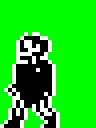
To make the pixel blank:
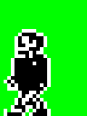
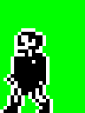
POKE 47249,252
Also, when EINSTEIN is lying down, the line above his head is entirely blank:
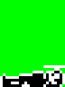
To make the line transparent:
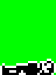
POKE 47254,255
BOY WANDER's head
When BOY WANDER is sitting on the floor, there is a blank line above his head:
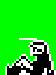
To make the line transparent:
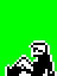
POKE 47265,255
MR CREAK's ear
MR CREAK's ear is transparent when he's midstride, which means it will appear
filled in or blank depending on the background:
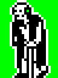
To make the ear always blank:
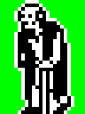
POKE 53356,171
MR CREAK's hand
There is a blank pixel in MR CREAK's walking stick hand when he has his other
arm raised (below, right), but the corresponding pixel is filled in when he is
standing or walking (below, left). This difference is most noticeable when MR
CREAK is wiping or writing on a blackboard.
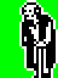
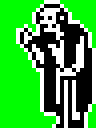
To fill in the blank pixel:
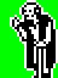
POKE 52089,30
POKE 52345,222
MR WACKER's trousers
There are two transparent pixels in the crutch of MR WACKER's trousers:
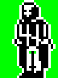
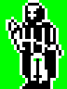
To make these pixels blank:
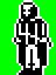
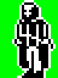
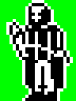
POKE 53896,228
MR WITHIT's and ALBERT's shoes
There are blank pixels near MR WITHIT's and ALBERT's shoes that should be
transparent:
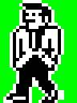
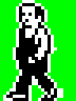
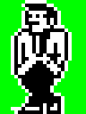
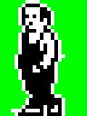
To make these pixels transparent:
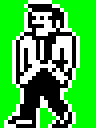
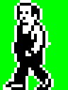
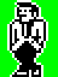
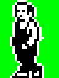
POKE 53461,95
POKE 53973,95
POKE 54485,223
POKE 54487,250
MR WITHIT's and MISS TAKE's hand
There are two blank pixels poking out of MR WITHIT's and MISS TAKE's hand:
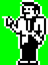
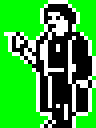
To make these pixels transparent:
POKE 51417,235
MR ROCKITT's coat
There are slight differences between MR ROCKITT's coat when he is standing or
walking (below, left) and when his arm is raised (below, right). The
differences are most noticeable when he is wiping or writing on a blackboard.
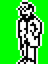
To remove these differences:
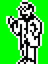
POKE 51644,232
POKE 51900,232
POKE 52668,36
POKE 52924,164
POKE 53180,44
POKE 53436,172
POKE 53692,46
POKE 53948,174
POKE 54204,54
POKE 54460,182
POKE 54716,53
POKE 54972,181
ALBERT's waist
There is an extraneous blank pixel near ALBERT's waist:
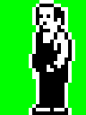
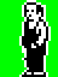
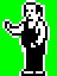
To make the pixel transparent:
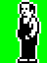
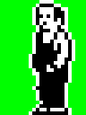
POKE 53853,223
ALBERT's head
There are two extraneous blank pixels at the back of ALBERT's head, one at the
top and one at the bottom:
To make these pixels transparent:
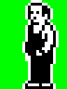
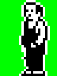
POKE 52316,191
POKE 54876,191
ALBERT's armpit
There is a transparent pixel that should be blank near ALBERT's armpit when his
arm is raised:
To make the pixel blank:
POKE 54865,127
Boys' hands
The mask around the boys' hands in phase 2 of their walking animation (the
right hands in the images below) contains an extraneous blank pixel that looks
amiss in the little boy's sprite (rightmost image):
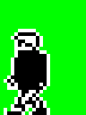
The corresponding pixel is transparent in phases 1 (shown below), 3 and 4:
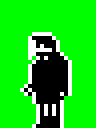
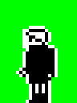
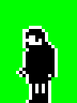
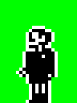
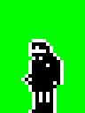
To make the extraneous blank pixel transparent:
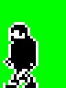
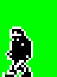
POKE 47209,231
Girls' shoes
In phase 1 of HAYLEY's and the little girls' walking animations, and also in
HAYLEY's hitting sprite, the tip of the shoe is filled in, as shown in these
unmasked graphics:
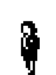
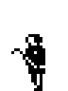
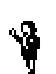
But the mask erases the tip of the shoe, and does not blank out the pixel
behind the shoe:
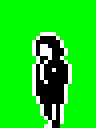
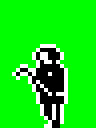
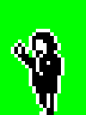
To fix the mask:
POKE 50877,238
Also, in phase 4 of HAYLEY's and the little girls' walking animations, there is
an extraneous blank pixel near the back foot that should be transparent:
To make this blank pixel transparent:
POKE 49864,239
Boys' shoes
In phase 2 of the boys' walking animations, the shoes are filled in, as shown
in these unmasked graphics:
But the mask erases the body of the shoe:
To fix the masks:
POKE 50281,222
Score box
The base of the 'o' in the word 'Score' in the score box is shifted one pixel
to the left: